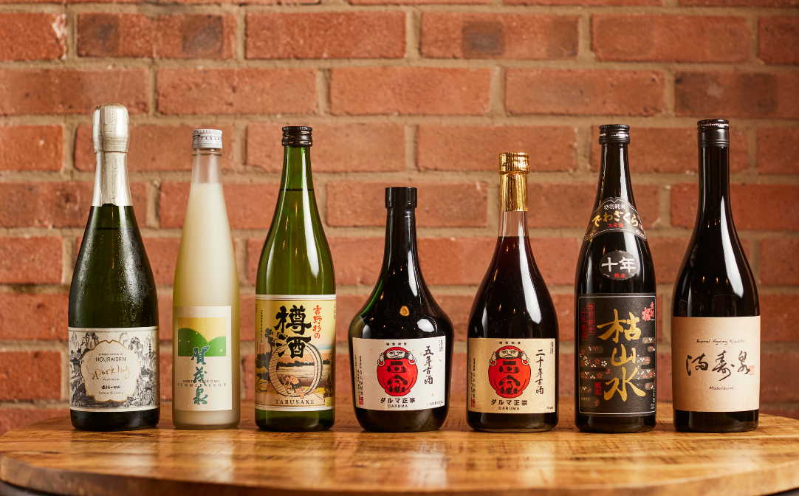

What the names mean, what they don't, and what to expect in the glass.

The labels describe one thing: how much of the rice grain was polished away before brewing. Everything else follows from that.